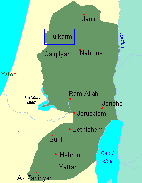

Location
Tulkarm is a city in Central Palestine located just inside what's called the Green Line, 15km east of the Mediterranian Sea.

Population
The population of Tulkarm is about 50,000 people, most of them are Suni Muslims, very few christians and no Jews.
Climate
The Climate of Tulkarm is subtropical with rainfall is limited to the winter.the average temperature in the winter ranges between
8 C to 16 C, while the average temperature in the summer ranges
between 17 C to 30 C.
Languages
Everyone speaks Arabic, however English is a second language and
almost everyone speaks English too.
Agriculture
Tulkarm produces Citrus Fruits, Melons, Olives, Olive Oil, Tomatoes,
Potatoes,Wheat,Sesame,peanut,Egg Plant,Chilly Pepper,Green Beans,Guava.
Education
There is a two-year college at Tulkarm it's called
Khodori Institute in addition to four highschools two for girls
and two for boys.
Television
Tukarm has three private television stations; Al-Salam,
Al-Fajir and Al-Bilad.
Settlement
Tulkarm has suffered from israeli settlement, just like the rest of Palestine.
if your land has been confiscated illegally you can contact my cousin Lawyer Mazen Jayyousi.
He especiallize in defending arab rights in Tulkarm and Palestine.
Sports
Tulkarm has 2 semi-profesional Soccer
teams one is called Markez Shabab Tulkarm and the other is called
Thaqafi Tulkarm, both are in The Palestinian League Division One
and both are usually on top or near the top of the standings
Related Links
Since I created this site i have found 3 sites about Tulkarm,
the first one is
District Of Tulkarm,
the second one is Tulkarm's Chamber of Commerce,
and the third one is Municipality of Tulkarm
Also check Related links to other cities in Palestine.